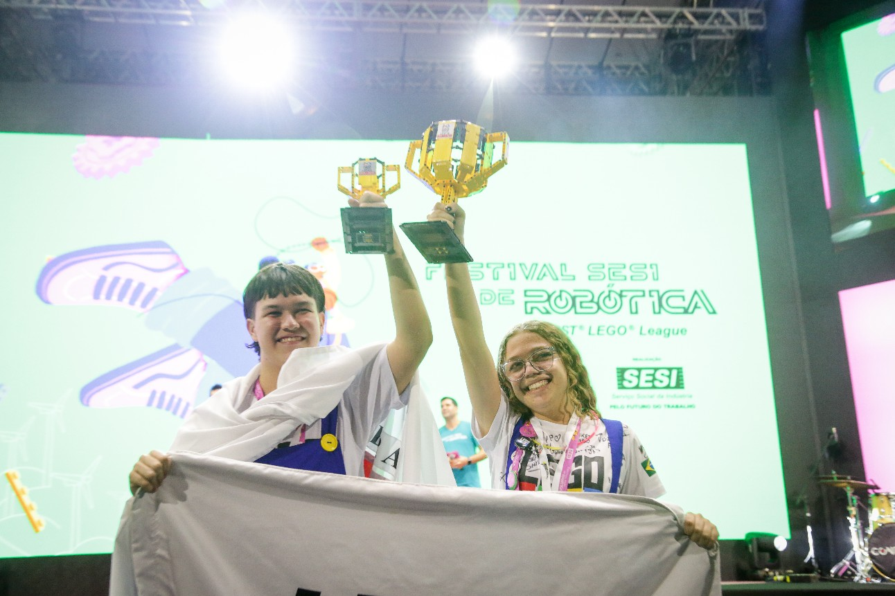

<section id="content-wrap" class="blog-single">
   	<div class="row">
   		<div class="col-twelve">

   			<article class="format-gallery">  

					<div class="primary-content">

						<h1 class="entry-title">Os grandes vencedores do Festival SESI de Robótica 2023 🏆
						</h1>	

						<ul class="entry-meta">
							<li class="date">Março 18, 2023
							</li>						
							<li class="cat"><a href="">Festival</a><a href="">SESI</a></li>				
						</ul>						

						<p class="lead">"É uma sensação muito única, é uma coisa mto inexplicável. Eu tô no meu último ano - eu participo de competições há 4 anos - e é uma sensação que nunca muda, de orgulho e satisfação, de saber que tudo o que eu fiz valeu a pena. Eu sou infinitamente grata por estar aqui e queria poder viver tudo isso de novo", comemora a estudante Beatriz Gonçalves, da equipe Lego Bros.</p> 
						<p></p>

						<h2>Desafio Aliança</h2>

						<p>
							<li>Halley, da Escola SESI Samir Nakad, em Birigui (SP) + SESI Heroes, da Escola SESI de Jundiaí (SP)</li><br>
							
						<h3>Champion's Awards</h3>
							O grande prêmio. Ele celebra a equipe que incorporou a experiência da FLL, por meio de todos os Core Values, ao mesmo tempo que alcançou com excelência e inovação tanto no Desempenho do Robô, no Design do Robô e no Projeto de Inovação.
							<br>
							<li>1º lugar: Lego Bros, do SESI José Bento Nogueira Junqueira, em São Gonçalo do Sapucaí (MG)</li>
							<br>
							<li>2º lugar: Red Rabbit, da Escola SESI de Americana (SP)</li>
							<br>
							<li>3º lugar: Amigos Droids, equipe de garagem de Belo Horizonte (MG)</li>
							<br>
							<li>4º lugar: Robotic Engineers, do SESI Campinas, em Goiânia (GO)</li>
							<br>
							<h2>Prêmio SESI e Engie</h2>
							Prêmio que reconhece o projeto de inovação na área de energia - tema da temporada

                    </div>
            </article>
        </div>
    </div>
</section>
